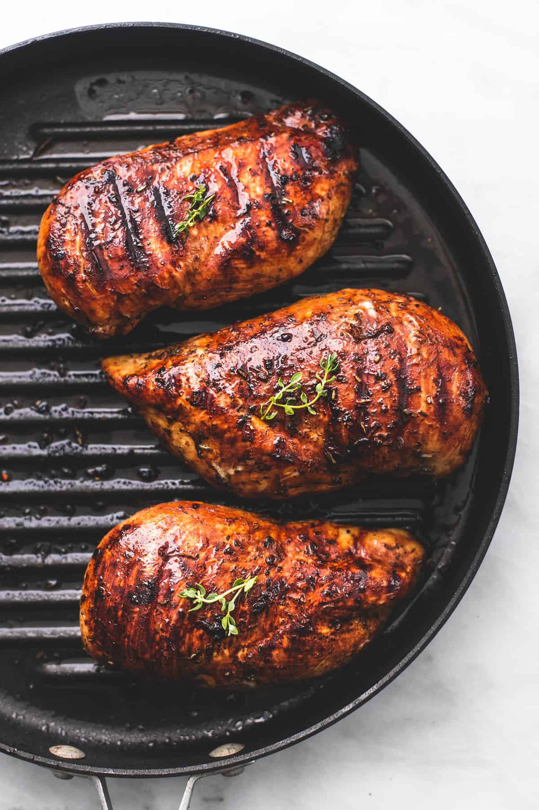

Grilled Chicken
Home

Grilled chicken recipe
Ingredients
- Chicken
- Salt
- Pepper
- Lemon
- BBQ sauce
Steps
- Pat dry chicken with paper-towels
- Squeeze lemon onto chicken, season with salt and pepper
- Drizzle olive oil onto large pan on med-high heat
- Place chicken on pan and cook for about 5 mins per side.
(cooking may vary depending on thickness of meat)
- Turn heat to low and add bbq sauce to both side and cook until sauce thickens